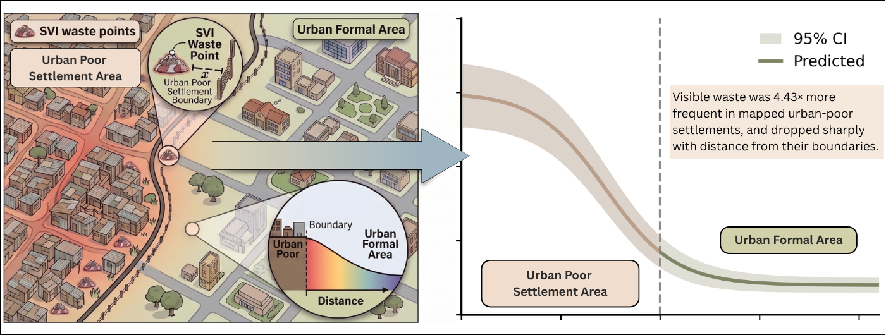
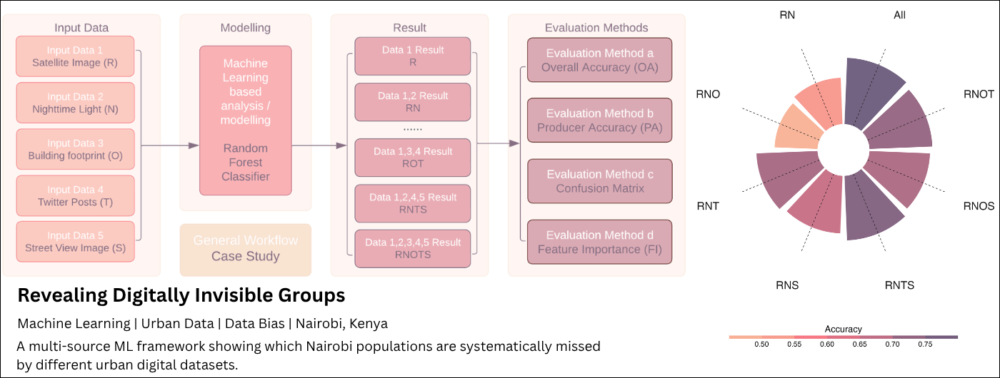
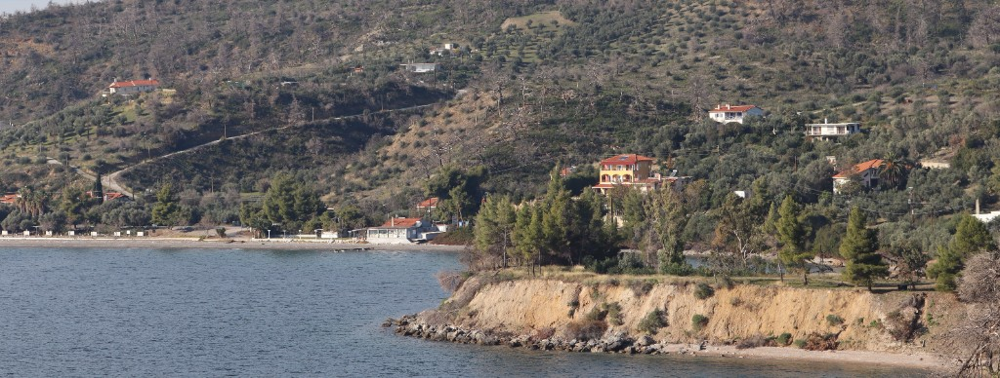
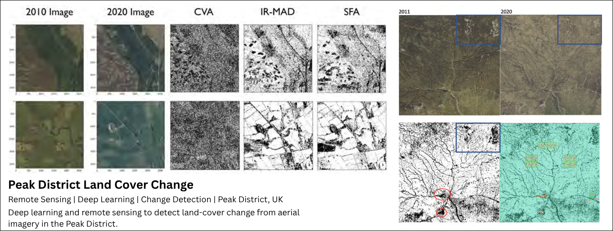

Projects
Satellite-Based Tent Detection, Gaza
Real Good Research | Ongoing
Move the slider to show or hide detected tent points.
National Conversation
United Kingdom | Funded by: BBC | Ongoing
Neighbourhood deprivation changes the environments people experience, but little about the kinds of places they value.
Detecting Migration Surges with Digital Trace Data
Case Studies: Chile–United States & Turkey–Germany | Manuscript submitted to International Migration Review
Policy change was followed by onward flows about 240% higher Chile→US and 122% higher Turkey→Germany than synthetic controls.
Can We Predict Internet Connectivity?
Case Studies: Kenya and Mexico | In collaboration with International Telecommunication Union
Visible Waste, Invisible Inequality
Case Study: Nairobi, Kenya | Under review, Applied Geography

Revealing Digitally Invisible Groups
Case Study: Nairobi, Kenya | Transactions in Urban Data, Science, and Technology

Wildfire Detection and Forest Management
Case Study: Euboea, Greece | Funded by: Interdisciplinary School for Environmental Crisis (ISEC)

Land Cover Change Detection
Case Study: Peak District, UK | Funded by: The Alan Turing Institute
